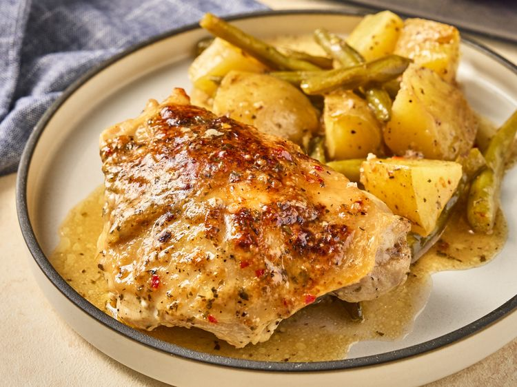

Home
One Pan Galic Parmesan Chicken Dinner

Description
This one pan garlic Parmesan chicken dinner is so easy. Green beans and gold potatoes bake with chicken thighs in store-bought garlic Parmesan sauce. Just a few minutes of prep and into the oven it goes.
Ingredients
- 1.5 lbs gold potatoes, cut into 1 1/2 inch pieces
- 1 lb fresh green beans, cut into 2 inch pieces
- 2 tbsps olive oil
- 1.5 tsps kosher salt, divided
- 3/4 tsps ground black pepper, divided
- 6 bone in, skin on chicken thighs
- 2/3 cup parmesan garlic sauce, such as Buffalo Wild Wings
Steps
- Preheat the oven to 375 degrees F
- Toss potatoes and green beans with olive oil, 1 teaspoon salt, and 1/2 teaspoon pepper. Add mixture to a 9x13-inch baking dish and place chicken on top. Sprinkle with remaining salt and pepper.
- Spread about 1 tablespoon sauce over each piece of chicken and drizzle remaining sauce around chicken pieces onto veggies.
- Bake in the preheated oven, uncovered, until chicken is cooked through and browned on top, 50 to 60 minutes. Rotate the pan halfway through and gently toss any of the vegetables that aren’t submerged in the sauce. An instant read thermometer inserted near the center of chicken should read 165 degrees F (74 degrees C).
Home